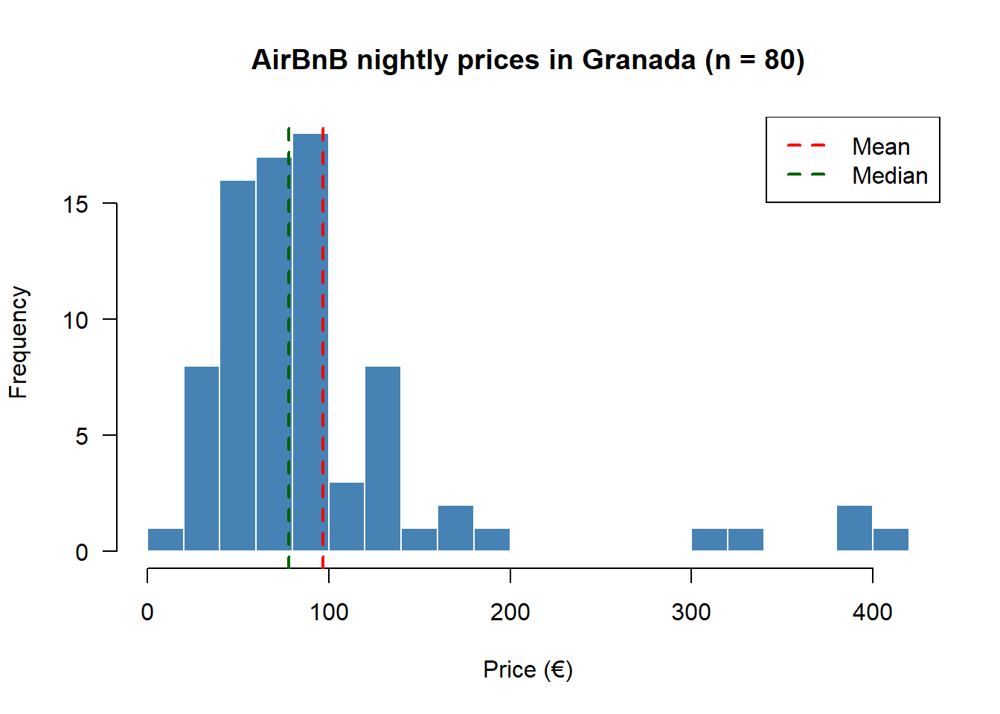
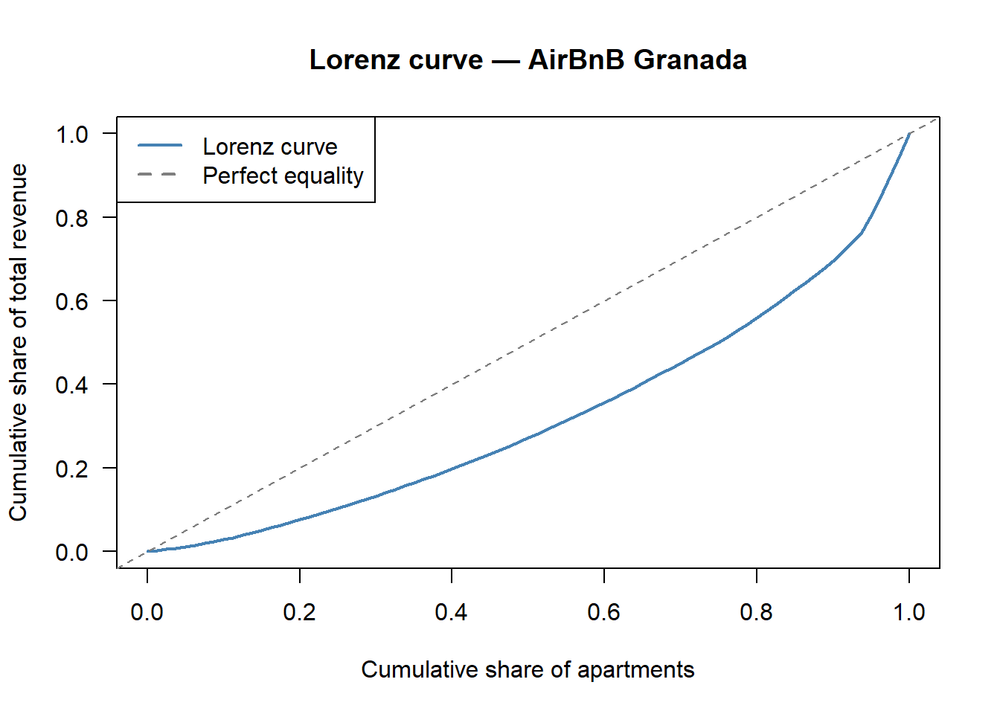

Code
# Base R is enough for everything in this lab; we add nothing exotic.Status: ported 2026-05-19. Reviewed by editor: pending.
By the end of this chapter the reader should be able to:
What is the typical nightly price of an AirBnB apartment in Granada, and how unequally is that price distributed across listings?
The running example throughout this chapter is a simulated sample of 80 AirBnB nightly prices in Granada that mimics the right-skewed shape of a real short-term-rental market: most listings cluster around a moderate price, while a few luxury apartments stretch the upper tail. Quantitative Techniques I is a descriptive and probabilistic course — we summarise data, we do not yet test hypotheses about a wider population (that comes later in the curriculum). The univariate tools introduced here will be combined with bivariate methods in Chapter 2 and reinterpreted probabilistically from Chapter 4 onwards.
Statistics is the science of collecting, organising, analysing, interpreting, and presenting data to support effective decision-making. It is conventionally divided into two branches:
TC1 focuses on descriptive statistics and probability; inferential techniques (confidence intervals, hypothesis tests, sampling distributions) are deliberately left to TC2 and Econometrics I.
The population is the complete collection of all individuals, objects, or measurements of interest. A sample is a subset of the population selected for study.
We work with samples rather than entire populations because full enumeration is typically too costly, too time-consuming, sometimes destructive (testing the lifespan of light bulbs requires burning them out), and sometimes simply infeasible (the population may be infinite or inaccessible). A well-chosen sample, drawn with an appropriate sampling method, can represent the population accurately.
A statistical variable is a characteristic that can take different values across the individuals in a population. Variables are classified along two crossing dimensions: the kind of value they can take, and the level of measurement they support.
There are four levels of measurement, ordered from least to most informative:
| Variable | Type | Level |
|---|---|---|
| Gender | Qualitative | Nominal |
| Customer satisfaction (1–5) | Qualitative | Ordinal |
| Number of employees | Quantitative, discrete | Ratio |
| Monthly income (€) | Quantitative, continuous | Ratio |
| Temperature (\(^\circ\)C) | Quantitative, continuous | Interval |
The type of variable dictates which statistics are meaningful. The “average eye colour” is nonsensical, but the average income is not. Always check the level of measurement before applying an arithmetic summary.
When a variable takes a manageable number of distinct values, the data are organised in a frequency table.
Let \(x_1, x_2, \ldots, x_k\) be the \(k\) distinct values taken by the variable \(X\) over \(n\) observations.
The defining identities are \[ \sum_{i=1}^{k} n_i = n, \qquad \sum_{i=1}^{k} f_i = 1, \qquad N_k = n, \qquad F_k = 1. \]
| \(x_i\) | \(n_i\) | \(f_i\) | \(N_i\) | \(F_i\) |
|---|---|---|---|---|
| 1 | 7 | 0.10 | 7 | 0.10 |
| 2 | 14 | 0.20 | 21 | 0.30 |
| 3 | 21 | 0.30 | 42 | 0.60 |
| 4 | 21 | 0.30 | 63 | 0.90 |
| 5 | 7 | 0.10 | 70 | 1.00 |
Sixty per cent of houses have three or fewer bedrooms (read from \(F_3 = 0.60\)). Both 3 and 4 bedrooms appear with the same maximal frequency, so the distribution is bimodal.
When a continuous variable takes too many distinct values to tabulate one-by-one, observations are grouped into class intervals, conventionally left-closed and right-open: \([L_i, L_{i+1})\).
For data grouped into intervals \([L_i, L_{i+1})\):
| Interval | \(c_i\) | \(n_i\) | \(a_i\) | \(h_i\) | \(f_i\) |
|---|---|---|---|---|---|
| \([0, 10)\) | 5 | 25 | 10 | 2.50 | 0.25 |
| \([10, 20)\) | 15 | 40 | 10 | 4.00 | 0.40 |
| \([20, 40)\) | 30 | 20 | 20 | 1.00 | 0.20 |
| \([40, 50)\) | 45 | 15 | 10 | 1.50 | 0.15 |
The interval \([20, 40)\) has width \(20\), double the others. Using the frequency \(n_i\) as the height of a histogram bar over that interval would visually exaggerate its weight; using the density \(h_i = n_i / a_i\) makes the area of each bar proportional to the frequency, which is the correct visual encoding.
Always check the scale of the vertical axis before interpreting a graph. A vertical axis that starts above zero can make tiny differences look like landslides — a classic technique in misleading political and corporate graphics.
Measures of central tendency identify a “typical” or “representative” value for the data.
Before specific summaries, it is helpful to introduce moments, which unify many statistics in a single framework. (Summation notation is reviewed in Appendix A.)
The \(r\)-th non-centred moment (about the origin) is \[ a_r = \frac{1}{n}\sum_{i=1}^{k} x_i^r \, n_i = \sum_{i=1}^{k} x_i^r \, f_i. \] The \(r\)-th centred moment (about the mean) is \[ m_r = \frac{1}{n}\sum_{i=1}^{k} (x_i - \bar{x})^r \, n_i. \]
Special cases are \(a_1 = \bar{x}\), \(m_1 = 0\), \(m_2 = S^2\) (variance), \(m_3\) enters skewness, and \(m_4\) enters kurtosis.
The arithmetic mean of a sample with distinct values \(x_1, \ldots, x_k\) and frequencies \(n_1, \ldots, n_k\) is
\[ \bar{x} = \frac{1}{n}\sum_{i=1}^{k} x_i\, n_i = \sum_{i=1}^{k} x_i\, f_i. \]
For grouped data the class mark \(c_i\) replaces \(x_i\).
Properties.
Weekly pocket money (€) for 13 children: \[ 5,\, 5,\, 5,\, 5,\, 5,\, 5,\, 6,\, 6,\, 6,\, 6,\, 6,\, 30,\, 40. \] \[ \bar{x} = \frac{6(5) + 5(6) + 30 + 40}{13} = \frac{130}{13} = 10\,\text{€}. \]
The mean is €10, yet 11 of the 13 children actually receive €5 or €6. The two extreme observations pull the mean upward — a textbook case where the mean is not representative.
The average parking time at a Granada parking lot is \(\bar{x} = 37\) minutes. The fee is \(Y = 0.30 + 0.015 X\) euros, where \(X\) is the time in minutes. The average revenue per vehicle is \[ \bar{y} = 0.30 + 0.015 \times 37 = 0.855\,\text{€}. \] No individual parking times are needed: the linear-transformation property delivers \(\bar{y}\) from \(\bar{x}\) alone.
For a strictly positive sample,
\[ G = \sqrt[n]{x_1 \cdot x_2 \cdots x_n} = \left(\prod_{i=1}^n x_i\right)^{1/n}. \]
The geometric mean is the right tool for averaging cumulative growth rates (investment returns, population growth).
An investor puts €10,000 into a fund. Over three years the returns are \(+20\%\), \(-10\%\), \(+15\%\), giving growth factors \(1.20,\, 0.90,\, 1.15\).
\[ G = \sqrt[3]{1.20 \times 0.90 \times 1.15} = \sqrt[3]{1.242} = 1.0748. \]
Average annual return: \(7.48\%\). The arithmetic mean of the returns, \((20 - 10 + 15)/3 = 8.33\%\), would overestimate the true average growth.
The mode \(Mo\) is the value of the variable with the highest frequency. A distribution can be unimodal, bimodal, or multimodal. For grouped data with equal widths, the modal class is the one with the largest \(n_i\) and \(Mo\) is approximated by its midpoint; with unequal widths, compare densities \(h_i\) instead. The mode can be computed for any level of measurement (including nominal data), is insensitive to outliers, but may fail to be unique or even to exist.
The median \(Me\) is the value that divides the ordered distribution into two equal halves: \(50\%\) of observations below it, \(50\%\) above.
For ungrouped data, sort in ascending order and take \[ Me = \begin{cases} x_{(n+1)/2} & \text{if $n$ is odd,} \\ \dfrac{x_{n/2} + x_{n/2+1}}{2} & \text{if $n$ is even.} \end{cases} \]
For grouped data, locate the median interval — the first one with \(N_i \geq n/2\) — and use the linear-interpolation formula \[ Me = L_i + \frac{n/2 - N_{i-1}}{n_i}\, a_i, \] where \(L_i\) is the lower bound of the median interval, \(N_{i-1}\) is the cumulative frequency before it, and \(a_i\) is the interval width.
The median is robust to outliers and is the preferred summary for skewed distributions (income, house prices, AirBnB nightly rates).
With \(n = 13\) (odd), the median is \(Me = x_{7} = 6\) €. The mean was €10; the median is €6. The median is clearly the more representative summary of the typical child’s pocket money — the two outliers (€30, €40) cannot move it.
This is why economists routinely report median household income rather than mean income: income distributions are right-skewed, and the mean is pulled up by a small number of very high earners.
For ten workers grouped as \([0,10),\, [10,20),\, [20,30),\, [30,40)\) with frequencies \(1, 2, 3, 4\):
\(n/2 = 5\). Cumulative frequencies: \(N_1 = 1\), \(N_2 = 3\), \(N_3 = 6\), \(N_4 = 10\). The median interval is \([20,30)\) (the first with \(N_i \geq 5\)). \[ Me = 20 + \frac{5 - 3}{3}\times 10 = 20 + 6.67 = 26.67. \] The median salary is approximately €2,667.
The \(k\)-th percentile \(P_k\) is the value below which \(k\%\) of the observations fall. Special cases are the quartiles \(Q_1 = P_{25}\), \(Q_2 = P_{50} = Me\), \(Q_3 = P_{75}\).
For grouped data the same interpolation idea gives \[ P_k = L_i + \frac{k\,n/100 - N_{i-1}}{n_i}\, a_i, \] where \([L_i, L_{i+1})\) is the interval containing the percentile.
Using the hourly-wage table (\(n = 100\)) with cumulative frequencies \(N_1=25\), \(N_2=65\), \(N_3=85\), \(N_4=100\):
The interquartile range is \(IQR = Q_3 - Q_1 = 20\) €.
Two datasets can share the same mean yet differ radically in spread. Consider two insurance companies, each with two clients: Company A has ages \(40, 40\) and Company B has \(20, 60\). Both have mean \(40\), but the mean is “representative” only in the first case. Dispersion measures quantify this idea.
The range is \[ R = x_{\max} - x_{\min}. \] Simple to compute, but depends only on the two extreme values and is therefore very sensitive to outliers. The interquartile range \[ IQR = Q_3 - Q_1 = P_{75} - P_{25} \] covers the central \(50\%\) of the data and is robust.
The (sample) variance and standard deviation, using the divisor \(n\) convention, are
\[ S^2 = \frac{1}{n}\sum_{i=1}^{k} (x_i - \bar{x})^2\, n_i = a_2 - \bar{x}^2, \qquad S = \sqrt{S^2}. \]
The second formula — “mean of squares minus square of the mean” — is usually quicker to compute by hand. The standard deviation has the same units as the variable.
This book follows the Spanish business-statistics convention and uses divisor \(n\). Many English textbooks divide by \(n-1\) and call the result \(\hat{\sigma}^2\). Both are valid; they differ by a factor of \(n/(n-1)\), which is negligible for \(n \geq 30\). R’s var() uses \(n-1\), so when you need the divisor-\(n\) version in the lab you must multiply by \((n-1)/n\) or recompute from scratch.
Properties.
Three-, four-, and three-hour columns at \(x_i = 5, 6, 7\): \(\bar{x} = 60/10 = 6\), \(a_2 = 366/10 = 36.6\), hence \[ S^2 = 36.6 - 36 = 0.6, \qquad S = \sqrt{0.6} \approx 0.775. \]
\(CV = S / \bar{x}\).
The CV is dimensionless, allowing comparison of dispersion across variables with different units or scales. A smaller \(CV\) means less relative dispersion and a more representative mean. The CV is invariant to changes of scale (it survives a re-currency conversion) but not to changes of origin. It should not be used when \(\bar{x} \approx 0\).
The salary distribution shows considerably more relative dispersion than hours worked, even though the salary variance (\(100\)) is much larger than the hours variance (\(0.6\)) — the comparison is meaningful only through the CV because the variables are on different scales.
The box-plot (box-and-whisker plot) is a visual summary of five statistics: the minimum (excluding outliers), \(Q_1\), the median, \(Q_3\), and the maximum (excluding outliers). Points beyond \(Q_1 - 1.5\,IQR\) or \(Q_3 + 1.5\,IQR\) are flagged as outliers. Box-plots are especially useful for comparing distributions side by side, e.g. salary distributions across departments.
Skewness quantifies the asymmetry of a distribution.
\[ g_1 = \frac{m_3}{S^3}, \qquad m_3 = \frac{1}{n}\sum_{i=1}^{k}(x_i - \bar{x})^3\, n_i. \]
Interpretation. \(g_1 > 0\) indicates right (positive) skewness — the tail extends to the right; the bulk of the data sits on the left (income is the classical example). \(g_1 < 0\) indicates left (negative) skewness — the tail extends to the left (age at retirement). \(g_1 = 0\) is a necessary but not sufficient condition for symmetry.
The coefficient is dimensionless and invariant under linear transformations with \(b > 0\).
With three observations at \(5\), four at \(6\), three at \(7\): \[ m_3 = \frac{1}{10}\big[3(-1)^3 + 4(0)^3 + 3(1)^3\big] = 0. \] Hence \(g_1 = 0\): the distribution is perfectly symmetric.
There is also a quick-and-dirty Pearson skewness coefficient \(A_p = 3(\bar{x} - Me)/S\), used informally when only \(\bar{x}\), \(Me\), and \(S\) are available.
Kurtosis quantifies the “peakedness” and tail heaviness of a distribution relative to a normal benchmark.
\[ g_2 = \frac{m_4}{S^4} - 3, \qquad m_4 = \frac{1}{n}\sum_{i=1}^{k}(x_i - \bar{x})^4\, n_i. \]
The subtraction of \(3\) makes the normal distribution the reference point. \(g_2 < 0\) is platykurtic (flatter than normal, light tails); \(g_2 = 0\) is mesokurtic (normal-like); \(g_2 > 0\) is leptokurtic (sharper peak, heavy tails, more outlier-prone).
Stock returns are typically leptokurtic. Extreme events — crashes and booms — happen more often than a normal model predicts. This is why simple Gaussian models underestimate financial risk, and why kurtosis matters in market-risk management.
Concentration measures the degree of inequality in how a variable’s total is distributed across individuals. Two extreme cases bookend the spectrum:
Applications are pervasive in economics: income and wealth inequality, market concentration, land ownership, tax-burden distribution.
The Lorenz curve graphs concentration. Sort the data from smallest to largest, then plot, for each \(i\),
The curve always passes through \((0, 0)\) and \((1, 1)\). The \(45^\circ\) diagonal \(q = p\) is the line of perfect equality. The further the Lorenz curve bows below the diagonal, the greater the concentration. The shaded area between the curve and the diagonal drives the Gini index.
\[G = \frac{\text{Area between Lorenz curve and diagonal}}{\text{Area of the triangle below the diagonal}}.\]
A practical computational formula, with \(p_0 = q_0 = 0\), is
\[ G = 1 - \sum_{i=1}^{k}(p_i - p_{i-1})(q_i + q_{i-1}). \]
Interpretation. \(G = 0\) is perfect equality; \(G = 1\) is maximum concentration. Real-world country income Ginis run roughly from \(0.25\) (Scandinavia) to \(0.65\) (South Africa). Spain’s INE 2023 figure is about \(0.327\).
Salaries (hundreds of €) grouped at midpoints \(5, 15, 25, 35\) with frequencies \(1, 2, 3, 4\). Total income \(= 250\). The cumulative shares are \(p_i = 0.10, 0.30, 0.60, 1.00\) and \(q_i = 0.02, 0.14, 0.44, 1.00\).
\[\begin{align*} G &= 1 - \big[(0.10)(0.02) + (0.20)(0.16) + (0.30)(0.58) + (0.40)(1.44)\big] \\ &= 1 - [0.002 + 0.032 + 0.174 + 0.576] = 1 - 0.784 = 0.216. \end{align*}\]
A Gini of about \(0.22\) indicates relatively low salary inequality in this small sample.
The mediala is the value that splits the distribution so that the sum of all values below it equals the sum of all values above it. When concentration is weak, the mediala is close to the median. When concentration is strong (few individuals account for most of the total), the mediala lies well above the median.
The lab uses a simulated sample of 80 nightly prices designed to look like a typical short-term-rental market: a positively skewed bulk plus a few luxury listings in the upper tail. The chapter-wide seed is set.seed(2026), but to remain consistent with the LearnR tutorial that uses the same dataset we keep the lab seed at \(42\).
# Base R is enough for everything in this lab; we add nothing exotic.set.seed(42)
prices <- round(c(rlnorm(75, meanlog = log(70), sdlog = 0.45),
runif(5, 250, 450)), 0)
length(prices)[1] 80head(prices, 10) [1] 130 54 82 93 84 67 138 67 174 68summary(prices) Min. 1st Qu. Median Mean 3rd Qu. Max.
18.00 54.75 78.00 96.89 100.00 406.00 The summary() output already hints at right skewness: the mean exceeds the median, and the maximum sits well beyond \(Q_3\).
We use cut() to bin prices into 40-euro-wide intervals and then build \((n_i, f_i, N_i, F_i)\).
breaks <- seq(20, 460, by = 40)
classes <- cut(prices, breaks = breaks, right = FALSE)
ni <- table(classes)
fi <- prop.table(ni)
Ni <- cumsum(ni)
Fi <- cumsum(fi)
freq_table <- data.frame(
Interval = names(ni),
ni = as.integer(ni),
fi = round(as.numeric(fi), 3),
Ni = as.integer(Ni),
Fi = round(as.numeric(Fi), 3)
)
knitr::kable(freq_table,
caption = "Grouped frequency table of AirBnB nightly prices")| Interval | ni | fi | Ni | Fi |
|---|---|---|---|---|
| [20,60) | 23 | 0.291 | 23 | 0.291 |
| [60,100) | 36 | 0.456 | 59 | 0.747 |
| [100,140) | 11 | 0.139 | 70 | 0.886 |
| [140,180) | 3 | 0.038 | 73 | 0.924 |
| [180,220) | 1 | 0.013 | 74 | 0.937 |
| [220,260) | 0 | 0.000 | 74 | 0.937 |
| [260,300) | 0 | 0.000 | 74 | 0.937 |
| [300,340) | 2 | 0.025 | 76 | 0.962 |
| [340,380) | 0 | 0.000 | 76 | 0.962 |
| [380,420) | 3 | 0.038 | 79 | 1.000 |
| [420,460) | 0 | 0.000 | 79 | 1.000 |
The first two or three classes (20–100 €) hold most apartments. The right tail is sparse — the visual signature of positive skewness.
stat_mode <- function(x) {
# Returns the most frequent value (the first one, in case of ties).
ux <- unique(x)
ux[which.max(tabulate(match(x, ux)))]
}
c(mean = mean(prices),
median = median(prices),
mode = stat_mode(prices),
geo = exp(mean(log(prices)))) mean median mode geo
96.88750 78.00000 93.00000 78.34962 Mean above median is the textbook signature of right skewness. The geometric mean lies below the arithmetic mean, as the AM–GM inequality guarantees for non-constant positive data.
prices_out <- c(prices, 5000) # a single luxury penthouse
c(mean_without = mean(prices),
mean_with = mean(prices_out),
median_without = median(prices),
median_with = median(prices_out)) mean_without mean_with median_without median_with
96.8875 157.4198 78.0000 79.0000 A single €5,000 listing moves the mean substantially but barely nudges the median. This is the canonical illustration of why the median is the robust default for skewed economic variables.
R’s var() and sd() divide by \(n-1\). To recover the divisor-\(n\) statistics defined in the chapter we rescale.
n <- length(prices)
S2 <- sum((prices - mean(prices))^2) / n # divisor n
S <- sqrt(S2)
CV_pct <- S / mean(prices) * 100
c(variance_n = round(S2, 2),
sd_n = round(S, 2),
IQR = IQR(prices),
range = diff(range(prices)),
CV_pct = round(CV_pct, 1))variance_n sd_n IQR range CV_pct
6129.15 78.29 45.25 388.00 80.80 A CV in the \(50\)–\(60\%\) range is substantial: the Granada AirBnB market is markedly heterogeneous.
set.seed(99)
city_centre <- rnorm(50, mean = 100, sd = 15)
countryside <- rnorm(50, mean = 100, sd = 40)
cv <- function(x) sd(x) / mean(x) * 100
c(city_centre_CV = round(cv(city_centre), 1),
countryside_CV = round(cv(countryside), 1))city_centre_CV countryside_CV
15.9 29.3 Same mean, very different CV: the countryside market is far less homogeneous.
hist(prices, breaks = 20, col = "steelblue", border = "white",
main = "AirBnB nightly prices in Granada (n = 80)",
xlab = "Price (€)", las = 1)
abline(v = mean(prices), col = "red", lwd = 2, lty = 2)
abline(v = median(prices), col = "darkgreen", lwd = 2, lty = 2)
legend("topright", legend = c("Mean", "Median"),
col = c("red", "darkgreen"), lwd = 2, lty = 2)
The red mean line sits to the right of the green median line — the classic visual signature of positive skewness.
m3 <- mean((prices - mean(prices))^3)
m4 <- mean((prices - mean(prices))^4)
g1 <- m3 / S^3
g2 <- m4 / S^4 - 3
c(skewness_g1 = round(g1, 3),
ex_kurtosis_g2 = round(g2, 3)) skewness_g1 ex_kurtosis_g2
2.606 6.827 Positive \(g_1\) confirms the right tail; positive \(g_2\) confirms heavier-than-normal tails — extreme nightly prices are more likely here than a bell curve would predict.
sorted <- sort(prices)
pop_share <- (1:n) / n
inc_share <- cumsum(sorted) / sum(sorted)
plot(c(0, pop_share), c(0, inc_share), type = "l",
col = "steelblue", lwd = 2,
xlab = "Cumulative share of apartments",
ylab = "Cumulative share of total revenue",
main = "Lorenz curve — AirBnB Granada", las = 1)
abline(0, 1, col = "grey50", lty = 2)
legend("topleft", legend = c("Lorenz curve", "Perfect equality"),
col = c("steelblue", "grey50"), lwd = 2, lty = c(1, 2))
# Gini via the trapezoidal rule.
B <- sum((inc_share[-1] + inc_share[-n]) * diff(pop_share)) / 2
gini <- 1 - 2 * B
round(gini, 3)[1] 0.354A Gini around \(0.30\) signals moderate concentration: the most expensive listings absorb a disproportionate share of total nightly revenue, but the market is far from one-firm dominance. For reference, the Spanish national income Gini reported by INE 2023 is \(0.327\) — strikingly close to the Granada AirBnB price Gini in this small sample.
In a grouped frequency table, the absolute frequency \(n_i\) of class \(i\) is:
Answer: B. Absolute frequencies are raw counts; proportions are relative frequencies, cumulative counts are \(N_i\), and midpoints are class marks.
Given \(n_i\) and total sample size \(n\), the relative frequency is \(f_i = n_i / n\). Which identity ALWAYS holds?
Answer: A. Dividing every frequency by \(n\) makes the relative frequencies a probability-mass-like vector that sums to one.
The cumulative absolute frequency \(N_i = \sum_{j \leq i} n_j\). The value of \(N_k\) for the last class \(k\) is:
Answer: C. All observations have been counted by the last class, so \(N_k = n\).
The arithmetic mean of \(\{x_1, \ldots, x_n\}\) satisfies which optimisation property?
Answer: B. Minimising squared deviations gives the mean; minimising absolute deviations gives the median.
For a strictly positive sample, the geometric mean \(G = (\prod x_i)^{1/n}\) satisfies:
Answer: B. This is the AM–GM inequality. Equality holds only for constant samples.
Adding a single very large outlier (e.g. a €5,000 penthouse to the AirBnB sample) typically:
Answer: B. The mean responds to every observation; the median is a positional statistic and is essentially unmoved by a single extreme value.
If we transform every observation as \(Y_i = a + b X_i\), then:
Answer: A. The mean is fully linear (responds to both \(a\) and \(b\)); the standard deviation only responds to \(b\) in absolute value, so adding a constant does not change spread.
The Fisher skewness coefficient \(g_1 = m_3 / S^3\) is positive when:
Answer: B. Positive skewness = right tail = mean above median. Heavy tails are diagnosed by kurtosis (\(g_2\)), not skewness.
The Gini index \(G \in [0, 1]\). Which interpretation is correct?
Answer: B. The Gini is \(0\) when everyone is equal (Lorenz curve = diagonal) and tends to \(1\) when the entire total is concentrated in a single unit.
The ages of 20 students in a class are \[ 18,\, 19,\, 19,\, 20,\, 20,\, 20,\, 20,\, 21,\, 21,\, 21,\, 21,\, 21,\, 22,\, 22,\, 22,\, 23,\, 23,\, 24,\, 25,\, 27. \]
| \(x_i\) | \(n_i\) | \(f_i\) | \(N_i\) | \(F_i\) |
|---|---|---|---|---|
| 18 | 1 | 0.05 | 1 | 0.05 |
| 19 | 2 | 0.10 | 3 | 0.15 |
| 20 | 4 | 0.20 | 7 | 0.35 |
| 21 | 5 | 0.25 | 12 | 0.60 |
| 22 | 3 | 0.15 | 15 | 0.75 |
| 23 | 2 | 0.10 | 17 | 0.85 |
| 24 | 1 | 0.05 | 18 | 0.90 |
| 25 | 1 | 0.05 | 19 | 0.95 |
| 27 | 1 | 0.05 | 20 | 1.00 |
\(F(21) = 0.60 = 60\%\).
Mode \(= 21\) (highest frequency, \(n = 5\)). The distribution is slightly right-skewed (the lonely \(27\) stretches the right tail).
The weekly sales (in thousands of €) of a small business over 8 weeks are \[ 12,\, 15,\, 11,\, 14,\, 18,\, 13,\, 16,\, 17. \] Compute (a) the mean, (b) the variance, (c) the standard deviation, (d) the coefficient of variation.
\(\sum x_i = 116\), \(\bar{x} = 116/8 = 14.5\) thousand €.
\(\sum x_i^2 = 1724\), \(a_2 = 1724/8 = 215.5\). Hence \(S^2 = 215.5 - 14.5^2 = 215.5 - 210.25 = 5.25\).
\(S = \sqrt{5.25} \approx 2.291\) thousand €.
\(CV = 2.291 / 14.5 \approx 0.158\). Low relative dispersion — the mean is quite representative.
Five daily temperatures (in \(^\circ\)C) are \(15, 18, 22, 20, 25\). Let \(F = 32 + 1.8 C\).
\(\bar{x} = 100/5 = 20\). \(\sum x_i^2 = 2058\), so \(S^2 = 2058/5 - 400 = 11.6\) and \(S \approx 3.406\,^\circ\)C.
\(\bar{y} = 32 + 1.8 \times 20 = 68\,^\circ\)F. \(S_Y = |1.8|\, S_X = 1.8 \times 3.406 \approx 6.131\,^\circ\)F.
Fahrenheit data: \(59,\, 64.4,\, 71.6,\, 68,\, 77\). Direct calculation gives \(\bar{y} = 340/5 = 68\) and \(S_Y \approx 6.131\) — matches part (b).
The monthly electricity bills (€) for 60 households are summarised in the table below.
| Bill (€) | \(n_i\) |
|---|---|
| \([20, 40)\) | 8 |
| \([40, 60)\) | 15 |
| \([60, 80)\) | 20 |
| \([80, 100)\) | 12 |
| \([100, 120)\) | 5 |
Compute (a) the mean, (b) the median, (c) the variance and standard deviation, (d) \(Q_1\) and \(Q_3\), (e) the coefficient of variation. Comment briefly on the symmetry of the distribution.
Two supermarket chains report weekly sales (in thousands of €) over 8 weeks:
| Week | Chain A | Chain B |
|---|---|---|
| 1 | 42 | 120 |
| 2 | 38 | 135 |
| 3 | 45 | 110 |
| 4 | 40 | 128 |
| 5 | 50 | 145 |
| 6 | 35 | 115 |
| 7 | 43 | 140 |
| 8 | 47 | 130 |
The ages of 50 participants in a training programme are grouped as follows.
| Age | \(n_i\) |
|---|---|
| \([20, 25)\) | 4 |
| \([25, 30)\) | 10 |
| \([30, 35)\) | 18 |
| \([35, 40)\) | 12 |
| \([40, 45]\) | 6 |
Sixty bank branches report their daily number of transactions in the following table.
| Transactions | \(n_i\) |
|---|---|
| \([20, 40)\) | 8 |
| \([40, 60)\) | 15 |
| \([60, 80)\) | 20 |
| \([80, 100)\) | 12 |
| \([100, 120]\) | 5 |
Two hundred households are grouped by annual income (thousands of €).
| Income | \(n_i\) |
|---|---|
| \([8, 16)\) | 30 |
| \([16, 24)\) | 50 |
| \([24, 32)\) | 60 |
| \([32, 40)\) | 40 |
| \([40, 48]\) | 20 |
Twenty-five supermarkets in Málaga charge the following prices (€) for a standard basket of groceries: \[ 32, 28, 35, 41, 30, 37, 29, 33, 45, 38, 31, 34, 40, \] \[ 27, 36, 33, 42, 30, 35, 39, 28, 34, 37, 43, 31. \]